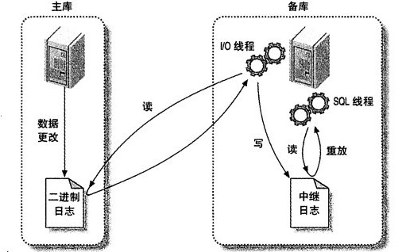
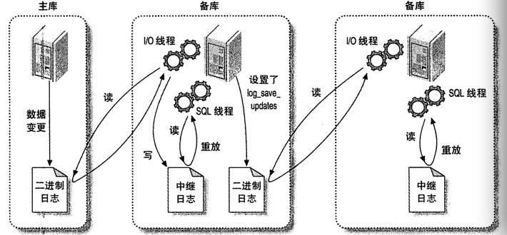

MySQL 复制备忘
Table of Contents
1 环境说明
MySQL 支持两种复制方式：基于行的复制和基于语句的复制，两种方式都是通过在主库上记录二进制日志，在被库重复日志的方式来实现异步的数据复制。
2 复制的用途
- 数据分布
- 负载均衡
- 备份
- 复制只是备份的一种技术补充，但是不能取代备份
- 高可用性和故障切除
- 避免单点故障
- MySQL 升级测试
3 复制工作过程
- 主库把数据更改记录到二进制日志（Binary Log）中
- 备库将主库上的日志复制到自己的中继日志 (Relay Log) 中
- 备库读取中继日志中的事件，将其重放到备库数据之上

第一步是主库记录二进制日志。在每次准备提交事务完成数据更新前，主库将数据更新的事件记录到二进制日志中，MySQL 会按照事务提交的顺序而不是语句执行顺序来记录二进制日志。在记录二进制日志后，主库会告诉存储引擎可以提交事务了。然后备库复制二进制日志到其本地中继日志中，首先备库会启动一个工作线程，称为 I/O 线程，I/O 和主库建立一个普通的客户端连接，然后在主库上启动一个特殊的二进制转储（binlog dump）线程，该线程会读取主库上二进制日志的事件，如果该线程追赶上主库将睡眠状态，直到主库发送信号量通知其有新事件产生才会被唤醒，备库 I/O 线程会将收到的事件记录到中继日记。备库复制过程有两个线程，一个 SQL 线程和一个 IO 线程。
4 复制配置
要求：主备拥有同样的数据
过程：
- 在每台服务器上创建复制账号「推荐这么做」
- 配置主库和备库
- 通知备库连接到主库并从主库复制数据
4.1 创建复制账号
主从推荐都加，其实主只需要 REPLICATION SLAVE 权限就可以了，主要目的是:
- 监控和管理复制的账号需要 REPLICATION CLIENT 权限，使用同一账号方便管理
- 方便角色切换
mysql> GRANT REPLICATION SLAVE, REPLICATION CLIENT ON *.*
-> TO repl@'192.168.0.%' IDENTIFIED BY 'pass';
4.2 配置主库和备库
主库：打开二进制日志选项，指定唯一的 server id ，在配置文件 my.cnf 修改如下
[mysqld] log-bin=bin server-id=1 # server id 值应该唯一，防止相同
如果之前没有开启二进制日志，则需要重启 MySQL 服务，为确保二进制是否已经创建，使用 SHOW MASTER STATUS 命令检查
mysql> SHOW MASTER STATUS\G +----------------+-----------+--------------+------------------+-------------------+ | File | Position | Binlog_Do_DB | Binlog_Ignore_DB | Executed_Gtid_Set | +----------------+-----------+--------------+------------------+-------------------+ | bin-log.000001 | 400 | | | | +----------------+-----------+--------------+------------------+-------------------+ 1 row in set (0.00 sec)
备库修改配置如下：
[mysqld] log-bin=bin server-id=2 relay-log=mysqld-relay-bin log-slave-updates=1 # 如果是 A -> B -> C 架构需要启用 log-slave-updates 该选项，允许备库将其重放的事件也记录到自身的二进制日志中 read_only=1 # 防止从库被修改
log_slave_updates 选项可以让备库变成其它服务器的主库,下图为发送复制事件到其它备库

4.3 启动复制
从库启动复制配置
mysql> CHANGE MASTER TO
-> MASTER_HOST='192.168.0.10',
-> MASTER_USER='repl',
-> MASTER_PASSWORD='pass',
-> MASTER_LOG_FILE='bin-log.000001',
-> MASTER_LOG_POS=400,
-> MASTER_CONNECT_RETRY=10;
查看当前状态
mysql> SHOW SLAVE STATUS\G
*************************** 1. row ***************************
Slave_IO_State:
Master_Host: 192.168.0.10
Master_User: repl
Master_Port: 3306
Connect_Retry: 60
Master_Log_File: bin-log.000001
Read_Master_Log_Pos: 400
Relay_Log_File: mysqld-relay-bin.000001
Relay_Log_Pos: 400
Relay_Master_Log_File: bin-log.000001
Slave_IO_Running: No
Slave_SQL_Running: No
...
Seconds_Behind_Master: NULL
START SLAVE
mysql> START SLAVE;
mysql> SHOW SLAVE STATUS\G
*************************** 1. row ***************************
Slave_IO_State: Waiting for master to send event
Master_Host: 192.168.0.10
Master_User: repl
Master_Port: 3306
Connect_Retry: 60
Master_Log_File: bin-log.000001
Read_Master_Log_Pos: 400
Relay_Log_File: mysqld-relay-bin.000001
Relay_Log_Pos: 400
Relay_Master_Log_File: bin-log.000001
Slave_IO_Running: Yes
Slave_SQL_Running: Yes
...
Seconds_Behind_Master: 0
5 线上服务器配置主从
很多情况下，一些主库已经运行很长时间了，需要做主从同步，这时从库还没有数据，那么就要把主的数据导入到从。
最基本的方法是关闭主库，把数据复制到备库。然后重启主库后，会使用一个新的二进制文件，在备库执行 CHANGE MASTER TO 指向这个文件的起始处即可。(缺点很明显，关闭主库)
- 使用
mysqldump
如果只包含 InnoDB 表，那么使用 mysqldump 如下命令备份数据:
mysqldump -hxx.xx.xx.xx --single-transaction --all-databases \
--master-data=1 > all-databases.sql
或者边导出边写入
mysqldump -hmaster_ip --single-transaction --all-databases \
--master-data=1 | mysql -hslave_ip
master-data 默认值是 1 ，加上之后会记录 Position 点并执行 CHANGE MASTER TO MASTER_LOG_FILE='bin-log.xxxx', MASTER_LOG_POS=xxxx; 语句，为 2 则记录但会注释 CHANGE MASTER 语句，不会被执行。
- A->B->C 方式
- B 为从和主身份时，B 实例上需要设置
logs-slave-updates选项，这个选项告诉从服务器将其 SQL 线程执行的更新记录到从服务器自己的二进制日志上，当然前提是需要开启 binlog
- B 为从和主身份时，B 实例上需要设置
6 一些重要的选项
- 「主」 主库上二进制日志最重要的选项:
sync_binlog，推荐设置成 1，保证在服务器崩溃时不丢失事件，虽然会降低性能 - 「主从」
innodb_flush_log_at_trx_commit根据实际情况设置 - 「主从」 二进制日志推荐使用指定命名，如
log-bin=bin - 「从」 中继日志指定命名
relay-log=mysqld-relay-bin - 「从」
skip_slave_start选项可以阻止备库崩溃后自动启动复制，预留时间修复 - 「从」
read_only，可以阻止大部分用户更改非临时表，除了复制 SQL 线程和其它拥有超级权限的用户之外
关于主从复制的一些问题（如延迟问题等），这里暂不讨论。